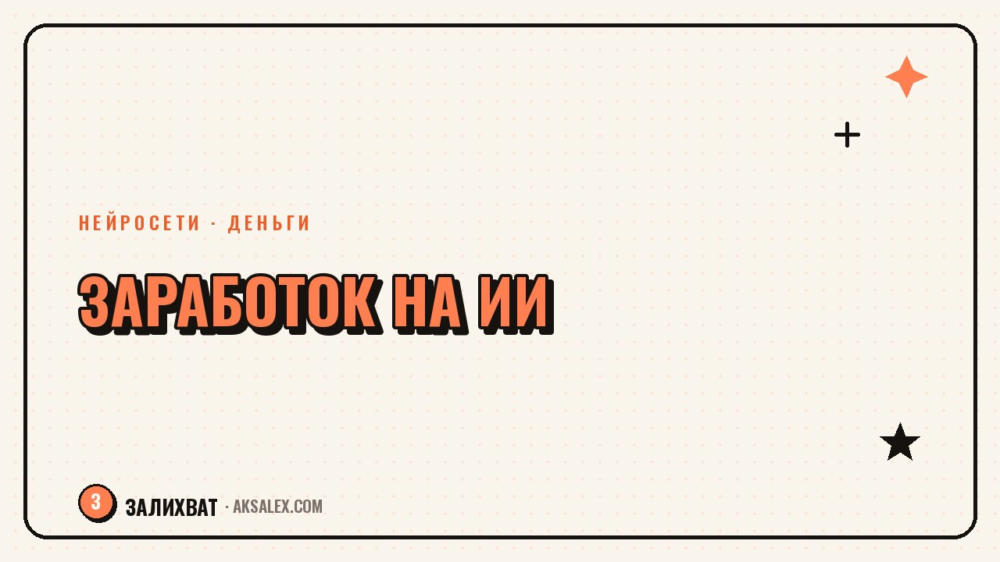

Как начать зарабатывать на ИИ с нуля новичку

Вопрос «как начать зарабатывать на ИИ» в последний год звучит почти как «как начать зарабатывать в интернете» десять лет назад - и ответов на него столько же разных и спорных. Разберём не хайп про «нейросеть сделает тебя миллионером», а конкретные форматы, где нейросеть реально экономит время клиенту, а значит, за это готовы платить. И честно скажем, где в этой теме пустые обещания.
Почему вокруг заработка на ИИ так много шума
Нейросети снизили порог входа в задачи, которые раньше требовали узких навыков: написать текст, собрать картинку, смонтировать видео, разобрать таблицу. Это и причина интереса, и причина обмана: курсы «заработай 100 тысяч на нейросетях за неделю» продают сам факт низкого порога, а не реальный спрос на твои услуги.
Честная механика простая: тебе платят не за то, что ты умеешь нажимать кнопку в сервисе, а за то, что ты экономишь чужое время или решаешь чужую задачу быстрее, чем они сами. Нейросеть - инструмент в этой цепочке, а не сам продукт.
Нейросеть не создаёт спрос на твои услуги - она снижает себестоимость их оказания. Спрос всё равно должен быть у заказчика, и его нужно найти.
Форматы заработка, которые реально работают
Ниже - не исчерпывающий список, а рабочие направления, в которых нейросеть - именно ускоритель, а не фикция.
Услуги для малого бизнеса
- Карточки товаров и описания для маркетплейсов - предпринимателю некогда, тебе с нейросетью быстрее.
- Посты и рассылки для соцсетей малого бизнеса - салоны, кафе, частные мастера.
- Обработка и ответы на отзывы клиентов - шаблонная, но важная рутина.
- Простые презентации и коммерческие предложения под конкретного заказчика.
Контент и медиа
- Монтаж коротких роликов с помощью нейросетей для тех, кто сам не умеет.
- Генерация и доработка иллюстраций для блогов, лендингов, карточек курсов.
- Озвучка и субтитры для роликов на нескольких языках.
- Написание сценариев и раскадровок под заказ для небольших каналов.
Обучение и консультации
- Помощь людям старшего возраста или новичкам разобраться с нейросетями на простом языке.
- Настройка готовых связок сервисов под конкретную задачу клиента.
- Разовые консультации «что выбрать под твою задачу» для малого бизнеса.
С чего начать, если опыта и портфолио нет
Без примеров работ тебе будут верить меньше - это нормально, так везде. Решается это не ожиданием первого клиента, а подготовкой за свой счёт и своё время до того, как придёт первый заказ.
Сделай три-пять учебных работ на вымышленных или реальных (с согласия) примерах: карточка товара, пост для салона красоты, короткий ролик. Это твоё портфолио, даже если денег за него не платили. Дальше ищи первых клиентов среди знакомых предпринимателей - с ними проще договориться на тестовую задачу за небольшую плату или бесплатно в обмен на отзыв.
Параллельно разберись в инструментах настолько, чтобы объяснить клиенту результат своими словами, а не терминами из рекламы сервиса. Заказчику важно не «какая нейросеть», а что он получит и когда.
Где деньги не водятся: разоблачаем частые обещания
В теме заработка на ИИ хватает форматов, которые больше похожи на схему, чем на работу. Стоит насторожиться в нескольких случаях.
- «Купи курс, и нейросеть сама будет зарабатывать за тебя» - если бы это так работало, продавец делал бы это сам, а не продавал курс.
- «Заработок на перепродаже доступа к нейросетям» - обычно нарушает условия сервиса и держится на вербовке новых людей, а не на реальной услуге.
- «Пассивный доход на генерации контента без проверки» - платформы всё активнее банят низкокачественный массовый контент, доход быстро схлопывается.
- Обещания конкретных сумм за конкретный срок без учёта твоего рынка и ниши - это маркетинг, а не прогноз.
Рабочая проверка любой идеи заработка простая: кто именно платит, за какую конкретно боль и почему он не сделает это сам за те же деньги. Если на этот вопрос нет внятного ответа, скорее всего, схема не продержится долго.
Сравнение форматов по входу и скорости первых денег
Сводная таблица поможет выбрать, с чего начать, если среди форматов выше несколько кажутся подходящими.
| Формат | Порог входа | Когда первые деньги |
|---|---|---|
| Карточки и тексты для малого бизнеса | Низкий, нужен только навык формулировать | 1-2 недели при активном поиске клиентов |
| Монтаж роликов с ИИ-инструментами | Средний, нужно освоить 2-3 сервиса | 2-4 недели на первые заказы |
| Иллюстрации и обложки на заказ | Средний, нужен вкус и насмотренность | 2-4 недели |
| Консультации по нейросетям | Высокий, нужна уверенность и насмотренность | От месяца, зависит от репутации |
| Перепродажа доступа к сервисам | Низкий, но и доход ненадёжный | Быстро, но риск блокировки высок |
Как закрепиться и не выгореть на старте
Первые заказы почти всегда недооценены по деньгам - это плата за портфолио и отзывы. Важно заранее решить, сколько таких недооценённых заказов ты готов взять, и после этого поднимать цену, а не застревать в демпинге навсегда.
Веди простой учёт: сколько времени уходит на заказ, сколько платят, какие клиенты возвращаются. Через десять-пятнадцать заказов у тебя будет честная картина, какой формат стоит твоего времени, а какой пора отпустить.
Частые вопросы
С чего начать зарабатывать на нейросетях без опыта
Сделай несколько учебных работ для портфолио на свободные темы, а затем предложи тестовую задачу знакомым предпринимателям за небольшую плату или в обмен на отзыв. Это быстрее и честнее, чем ждать первого клиента с улицы.
Сколько можно реально зарабатывать на ИИ новичку
Конкретную сумму без знания твоей ниши, рынка и загрузки назвать нельзя - слишком много переменных. Ориентируйся не на обещания курсов, а на цены за похожие услуги у фрилансеров в твоём городе или нише.
Какие нейросети выбрать для заработка на старте
Начни с двух-трёх сервисов под конкретную задачу, которую хочешь продавать, а не пытайся освоить всё сразу. Углубляться в инструмент стоит после того, как появился хотя бы один платящий клиент.
Можно ли зарабатывать на ИИ без вложений
Базовые задачи - тексты, посты, простые карточки - можно делать на бесплатных тарифах нейросетей. Платные подписки имеет смысл подключать, когда заказы уже окупают расходы.
Как отличить реальный заработок на ИИ от схемы
Задай себе вопрос: кто платит, за какую конкретную проблему и почему он не решит её сам. Если ответ упирается только в вербовку новых людей или обещание пассивного дохода без усилий - это признак схемы, а не рабочей услуги.
Раз тема оказалась полезной, вот что почитать следующим. Какие нейросети реально помогают в учёбе бесплатно, а где риск получить ерунду вместо знаний.
Читать статью →а не вручную